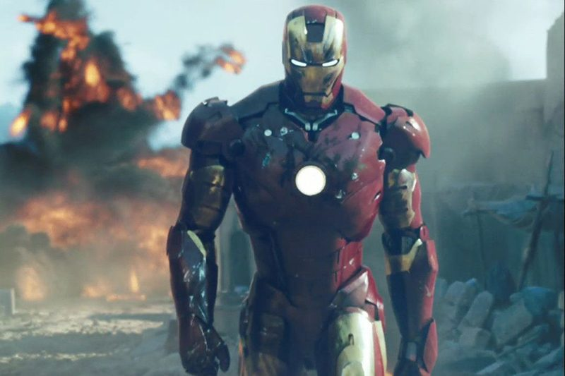

Iron Man
Who is Iron Man?
The benefactor of the Avengers who is a self-described genius, billionaire, playboy, and philanthropist with electromechanical suits of armor of his own making. Co-director Joe Russo explained that Stark "senses this greater threat approaching, so he is doing everything in his power to keep the Earth safe". Downey added that Stark has smaller goals than in previous films.
Thanos

Who is Thanos?
An intergalactic warlord from Titan who seeks all six Infinity Stones to destroy half of all life for the sake of "re-balanc[ing] the universe". Producer Kevin Feige added that Thanos believes the universe is becoming over-populated, which led to the destruction of his home moon Titan and is something he vowed not to let happen again, and also said "you could almost go so far as to say he is the main character of" the film. McFeely shared this sentiment, describing the film as his "hero journey" in addition to being the film's protagonist, stating, "Part of that is the things that [mean] the most to him. We wanted to show that. It wasn't just power; it wasn't just an ideal; it was people". Brolin likened Thanos to "the Quasimodo of this time" and the novel Perfume, since Thanos was born deformed and considered a "freak" on Titan, while Joe Russo would reference The Godfather (1972) for Brolin at times, which Brolin felt helped "to emotionalize the whole thing". Brolin further added that he preferred playing Thanos over Cable in Deadpool 2 (2018) because of the amount of work that went into creating the character. Thanos does not wear armor for most of the film, which is symbolic of his growing power as he collects the Infinity Stones. In addition to voicing for the character, Brolin performed motion capture on set.
Captain America

Who is Captain America?
The fugitive leader of the non-regulation faction of Avengers. A World War II veteran, he was enhanced to the peak of human physicality by an experimental serum and frozen in suspended animation before waking up in the modern world. Joe Russo said after the events of Captain America: Civil War (2016), Rogers struggles with the conflict between his responsibility to himself and his responsibility to others. The character embodies the "spirit" of the comic book identity Nomad in the film, and receives new vibranium gauntlets from Shuri to replace his old shield. An early draft of the film had Rogers first appearing at the end of the film to save Vision from Corvus Glaive in Wakanda. Markus and McFeely were called "insane" for waiting that long to introduce Rogers into the film and ultimately conceded it was "not [a] satisfying" approach.
Thor

Who is Thor?
An Avenger and the king of Asgard, based on the Norse mythological deity of the same name. Joe Russo stated that Thor's storyline picks up after the events of Thor: Ragnarok (2017), which finds him in a "very profound", "very interesting place" with "real emotional motivation". At the recommendation of Hemsworth, writers Christopher Markus and Stephen McFeely consulted Thor: Ragnarok director Taika Waititi and screenwriter Eric Pearson to help carry over the comedic and tragic elements of the re-toned Thor from that film. Joe Russo said that Thor has "the driving hero's arc of the movie which stands in direct opposition to Thanos' argument" and would have been the main protagonist of the film had Thor killed Thanos.